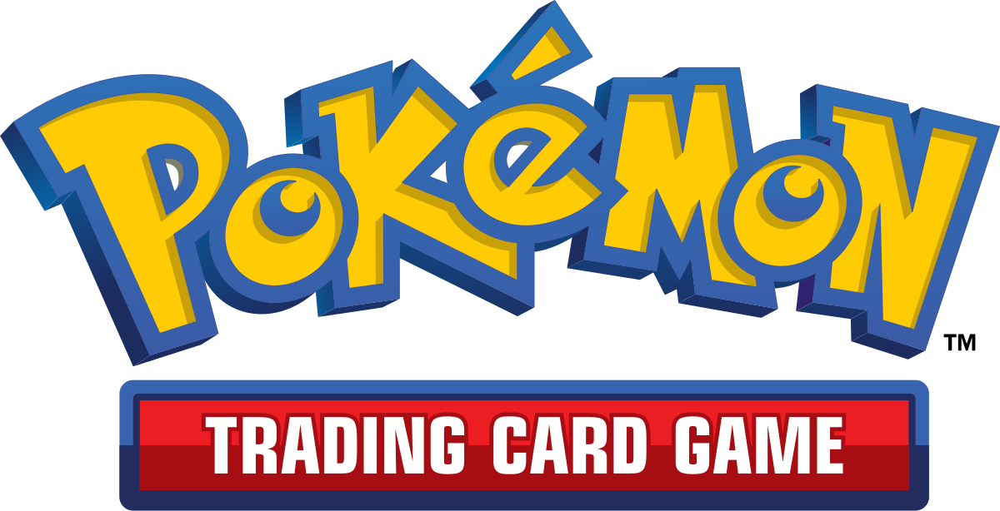
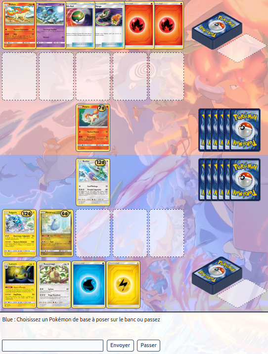
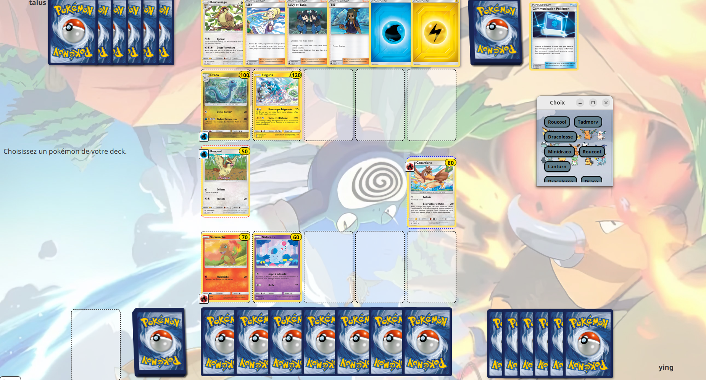

Conception et développement d’un jeu Pokémon Trading Card Game intégrant une Interface Graphique en JavaFX

Développement du "cerveau" du jeu : gestion des règles, des cartes et des tours en Java pur.

public class Pokemon {
private int degats;
private boolean estBrule;
private boolean degatsEvite;
public void evoluer(CartePokemon c) {
this.cartePokemon = c;
this.cartes.add(c);
}
public void appliquerDegats(int nb, Joueur j) {
if (!degatsEvite) {
// Gestion Faiblesse
if (type == carte.getFaiblesse()) nb *= 2;
degats += nb;
if (degatsSubitAugmente) degats += 20;
} else {
j.log(getNom() + " évite tout !");
}
}
}

Conception d'une IHM réactive en JavaFX respectant le pattern MVC.
Le projet "Pokémon TCG" est une simulation complète du célèbre jeu de cartes à collectionner. L'objectif était de développer un moteur de jeu capable de gérer une partie entre deux joueurs en respectant scrupuleusement les règles officielles (pioche, attaques, banc, énergies, cartes Dresseur).
Type de projet : Ce projet a été réalisé en binôme. Nous avons collaboré via Git pour implémenter la logique métier (Backend) avant de passer à l'interface graphique.
📚 Pour aller plus loin : Vous pouvez consulter les règles officielles complètes du jeu sur ce site : Pokémon Carte - Les règles du jeu.
Le moteur gère les règles standards : chaque joueur dispose d'un deck de 60 cartes et de 6 cartes récompense. La victoire s'obtient en mettant K.O. les Pokémon adverses (récupération des récompenses) ou si l'adversaire ne peut plus piocher.
J'ai pris en charge plusieurs modules critiques du moteur de jeu :
La seconde partie du projet consistait à développer une interface graphique complète pour remplacer l'interaction console. Cette étape imposait une architecture rigoureuse pour séparer la logique (Moteur) de l'affichage (Vue).
IJeu agissant comme une façade pour communiquer avec le moteur. Cela garantit que la vue ne manipule jamais directement les objets internes du noyau.
Pane :
VueDuJeu : L'orchestrateur principal de la scène.VueJoueurActif vs VueAdversaire : Gestion de l'affichage différencié (cartes visibles vs dos de cartes).VuePokemon : Représentation visuelle des états (PV, énergies, statuts).La qualité du code était une priorité. J'ai rédigé l'intégralité des tests unitaires pour les cartes Objet et Dresseur, ainsi que pour les mécaniques complexes des Pokémon.
Cette approche (TDD) a permis de garantir qu'une modification sur le moteur ne cassait pas les règles existantes (Non-régression).
Ce projet, couvrant la Phase 1 (Moteur) et la Phase 2 (Interface), m'a permis d'explorer les deux facettes du développement : le BACK et le FRONT. J'ai découvert que j'appréciais énormément le développement Frontend en général.
J'ai appris à coder un jeu de A à Z : de la conception logique au développement, en passant par l'intégration graphique. Plus important encore, j'ai compris qu'il ne fallait délaisser aucune partie : le backend et le frontend sont tout aussi importants pour l'expérience utilisateur. Enfin, j'ai adoré coder Pokémon TCG, un jeu qui a marqué mon enfance.